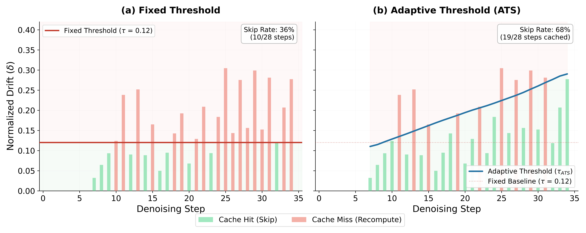
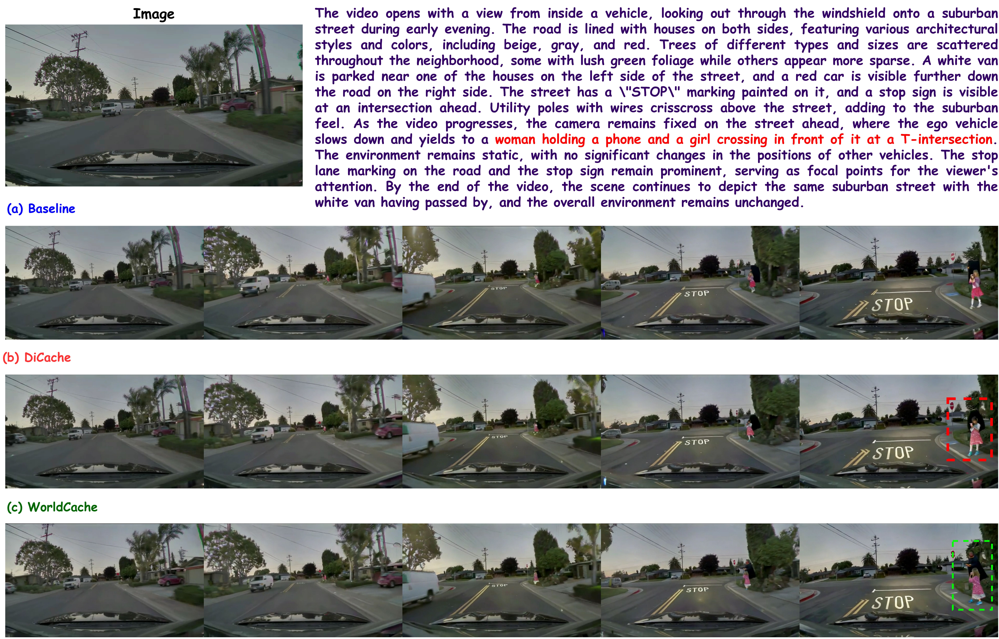
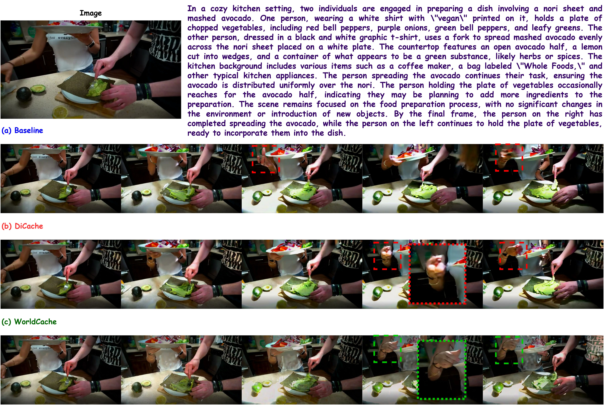
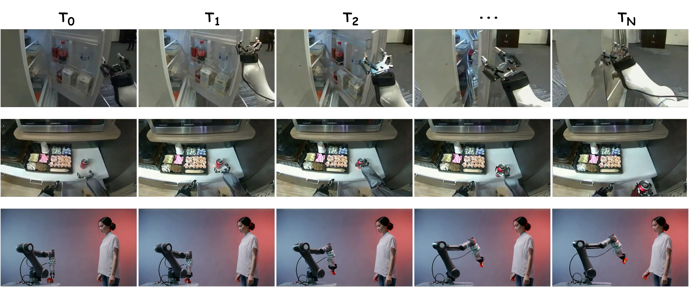
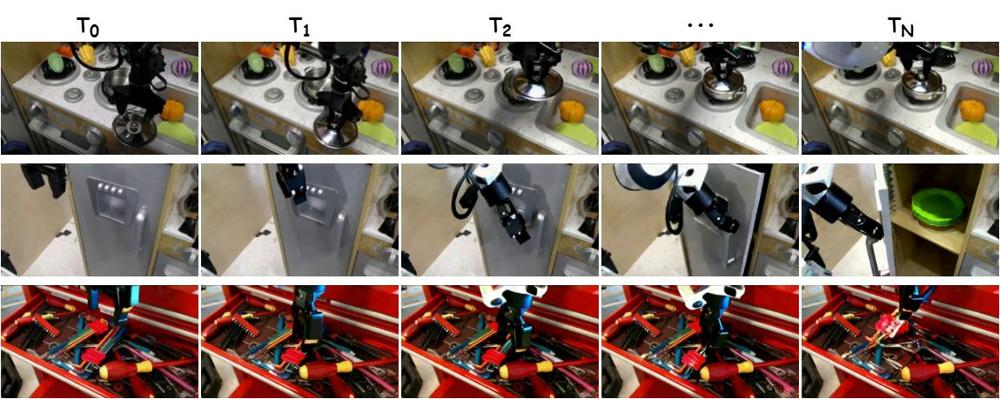

Content-Aware Caching for Accelerated Video World Models
WorldCache decides when feature reuse is safe and predicts skipped computation instead of
copying stale activations — delivering a stronger speed–quality frontier across Cosmos, WAN2.1, and EgoDex-Eval.
Main benchmark2.30×
Cosmos-2.5-2B · I2W
Transfer benchmark2.36×
WAN2.1-1.3B · T2W
Robotics evaluation2.30×
EgoDex-Eval · WAN-14B
Long-budget gain3.10×
100 denoising steps
Teaser comparison
WorldCache preserves motion, layout, and background structure while reaching the strongest reported
speed–quality trade-off.
Watch motion
Fast motion tightens the gate so the model recomputes when stale features would be risky.
Protect salient regions
Hands, agents, and fine structures count more in the skip decision.
Predict, don't copy
Optimal blending makes skipped blocks behave like a careful approximation.
Overview
Why simple feature reuse breaks in world models
Standard training-free caching methods reuse stale activations whenever average drift looks small. That
shortcut can fail in dynamic scenes, where local motion and perceptually important objects change long before
the global average signals trouble.
Abstract
WorldCache is a training-free caching framework for diffusion-transformer world models. It improves both
when to reuse features and how to approximate skipped computation through
motion-adaptive thresholds, saliency-weighted drift estimation, optimal feature approximation, and
adaptive threshold scheduling across denoising steps.
Large backgrounds mask meaningful changes in hands, agents, or manipulated objects.
02
Copying the past is too crude
Frozen snapshots create ghosting, blur, and motion drift once the rollout diverges.
03
Late denoising has more reuse
After the global layout forms, better caching decisions produce the largest gains.
WorldCache treats caching like a careful prediction, not a blind shortcut.
Video world models spend much of their time repeating similar computation across denoising steps. WorldCache
saves time by reusing deep features only when the scene is stable enough, then estimating the skipped
features with motion-aware approximation.
WorldCache changes the skip rule, the reuse rule, and the threshold schedule so that caching follows motion
and denoising phase instead of relying on a single fixed heuristic.
Pipeline
Probe blocks estimate drift. Cache hits route through OFA; cache misses execute deep blocks and
refresh the cache.
CFC
Causal Feature Caching
Why it helps
Paper note
Saliency map
SWD gives more weight to detail-rich regions where caching errors are easiest to notice.
Adaptive thresholds

ATS captures more late-stage reuse by matching the threshold to the denoising phase.
Results
Results across Cosmos, WAN2.1, and EgoDex-Eval
Switch between main benchmarks, transfer results, robotics evaluation, and the unified all-results view.
Speed-quality frontier
Latency comparison
Lower latency is better. Each bar shows the paper's reported runtime and speedup.
Table view
Paper table values
All results at a glance
Main paper results, transfer benchmarks, robotics evaluation, and supplementary comparisons.
Cosmos, WAN2.1, EasyCache, TeaCache, DiCache, and WorldCache in one view.
Robotics evaluation
EgoDex-Eval rows
Frame-level PSNR, SSIM, LPIPS, latency, and speedup.
Scaling
How the gain changes with denoising step budget
Longer denoising trajectories give caching more opportunities. This view tracks latency and speedup across
reported step budgets.
Interactive step-budget view
Select a budget to inspect latency and speedup values.
WorldCache
DiCache
Baseline
Visuals
Qualitative evidence across scenes and scales
WorldCache stays closer to the baseline rollout in dynamic and interaction-heavy regions where simpler caching
strategies drift.
Qualitative Figure
WorldCache remains visually closer to the baseline in motion-sensitive regions.
Qualitative Figure

WorldCache better preserves pedestrian identity and background consistency.
Qualitative Figure

In kitchen interaction, WorldCache keeps hands and carried objects more stable.
Qualitative Figure

WorldCache maintains visual fidelity in challenging dynamic scenes.
Qualitative Figure

WorldCache produces temporally consistent outputs across diverse scenarios.
Citation
Reference
If you find WorldCache useful in your research, please consider citing our work.
BibTeX
@inproceedings{nawaz2026worldcache,
title = {WorldCache: Content-Aware Caching for
Accelerated Video World Models},
author = {Umair Nawaz and Ahmed Heakl and
Ufaq Khan and Abdelrahman Shaker and
Salman Khan and Fahad Shahbaz Khan},
journal = {arXiv preprint arXiv:2603.XXXXX},
year = {2026}
}